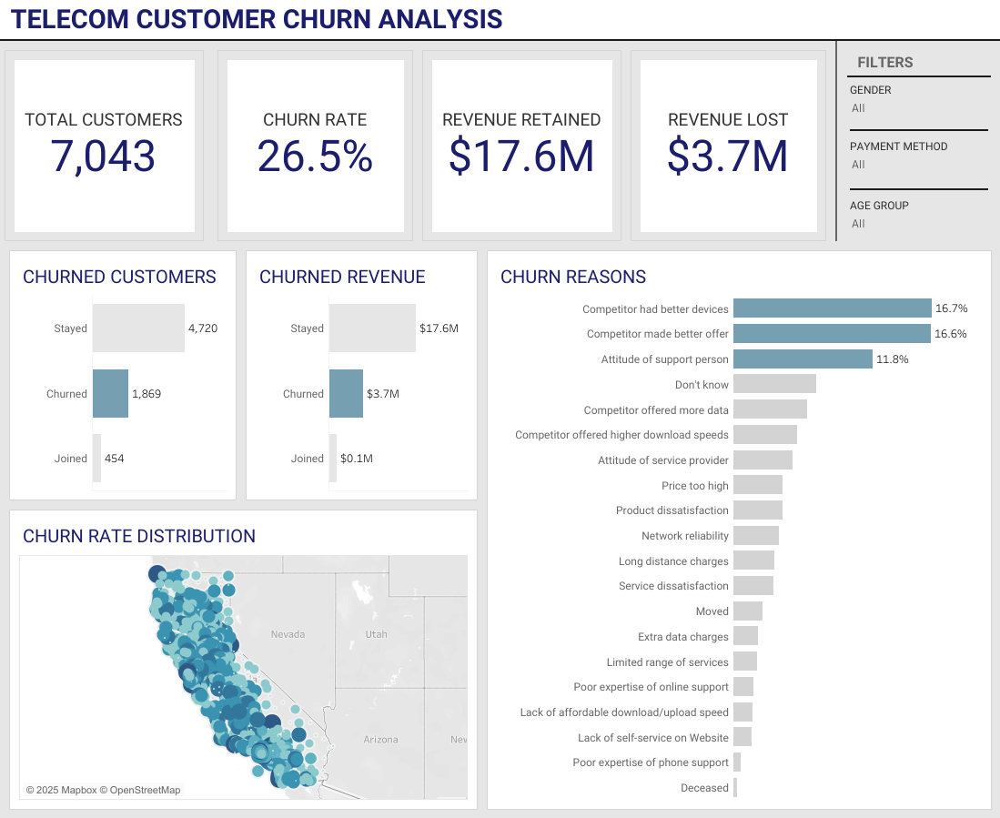
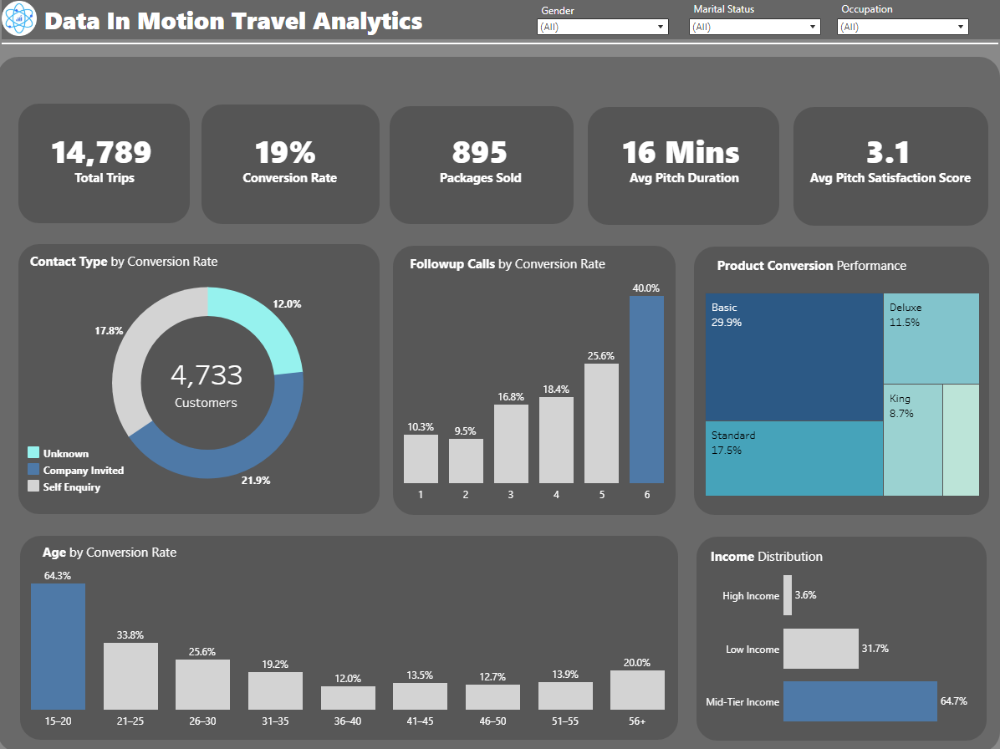
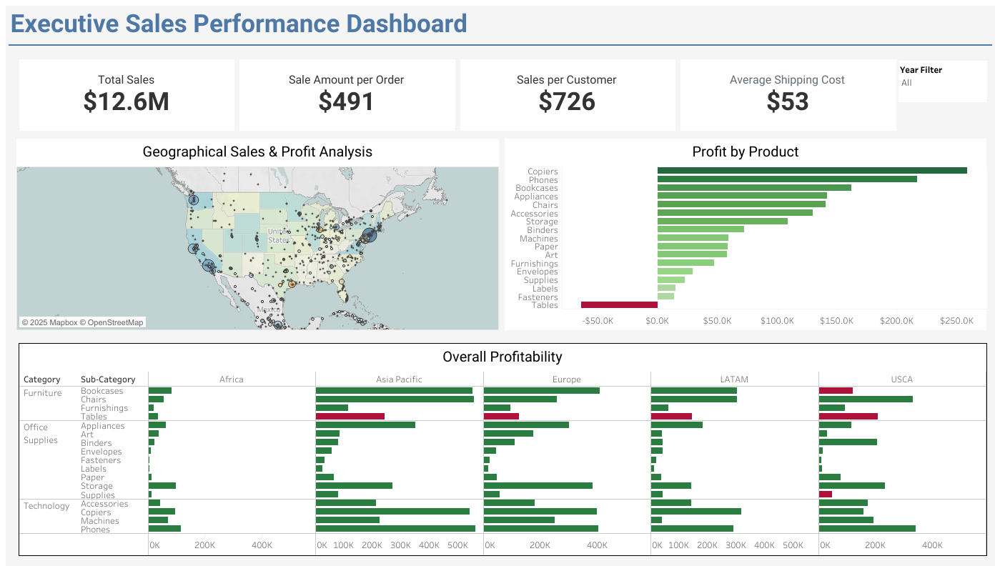
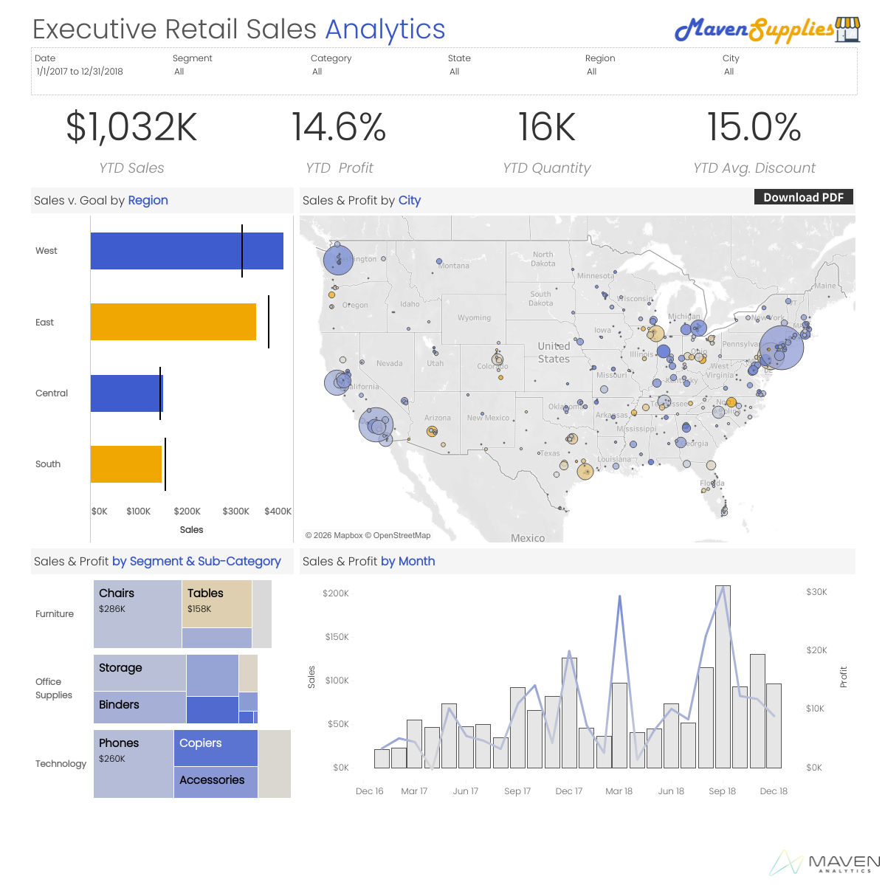

SQL · Tableau · Excel · Power BI · Business Intelligence

Dashboard analysing telecom customer churn patterns, identifying at-risk segments and key drivers of customer loss to support retention strategy decisions.
View Dashboard →
Interactive dashboard analysing travel and marketing performance trends to support strategic planning and campaign decisions.
View Dashboard →
Executive-level dashboard tracking sales, profit, and regional performance across product categories, enabling leadership to monitor KPIs at a glance.
View Dashboard →
Retail sales executive dashboard visualizing revenue trends, product performance, and store-level insights to drive inventory and sales strategy.
View Dashboard →Segmented 99,000+ customer transactions across 10 malls using the RFM model, identifying 5 customer groups. Top customers generated $30.7M in revenue while lost customers represented $16.4M in recoverable opportunity.
Read Case Study →Mapped supply chain data across multiple stages to surface inefficiencies and propose strategic improvements, identifying key demographic gaps and operational enhancement opportunities.
Read Case Study →Queried the Google Play Store dataset to identify the most profitable app niches by category, download volume, and user review trends, giving developers data-backed direction on where to build.
Read Case Study →Applied systematic SQL techniques to clean and prepare raw data for reliable analysis, handling missing values, duplicates, and inconsistencies across a real-world dataset.
Read Case Study →Most businesses are not short on data. They are short on answers. I close that gap, taking what is already sitting in your spreadsheets, databases, and reports and turning it into something that actually tells you what to do next.
I'm a freelance data analyst with a BS in Computer Science, skilled in SQL, Tableau, and Excel. My work is straightforward: take raw, messy data, find what it is actually saying, and translate that into decisions a business can act on.
I extract, validate, and transform datasets of 10,000 to 15,000+ records, building clean, analysis-ready foundations from raw operational data.
I design interactive Tableau dashboards and structured Excel reports that give stakeholders a real-time view of what is working and what is not.
I conduct structured EDA to surface trends, performance gaps, and anomalies that would otherwise stay buried in a spreadsheet.
I do not just present findings. I build the narrative around them, because insights that cannot be communicated clearly do not drive change.
What Sets Me Apart
Most analysts come from a purely academic background. I bring seven years of operational experience working in a real business environment, tracking inventory data, working with warehouse management systems, and maintaining a 99% accuracy rate across high-volume daily workflows. My operational background helps me understand how businesses actually run, making me a better analyst for the businesses I serve.
Let's Work Together
Have a data project in mind? Whether it is a one-off analysis, a dashboard build, or an ongoing reporting need, I would love to hear about it.
Send a Message